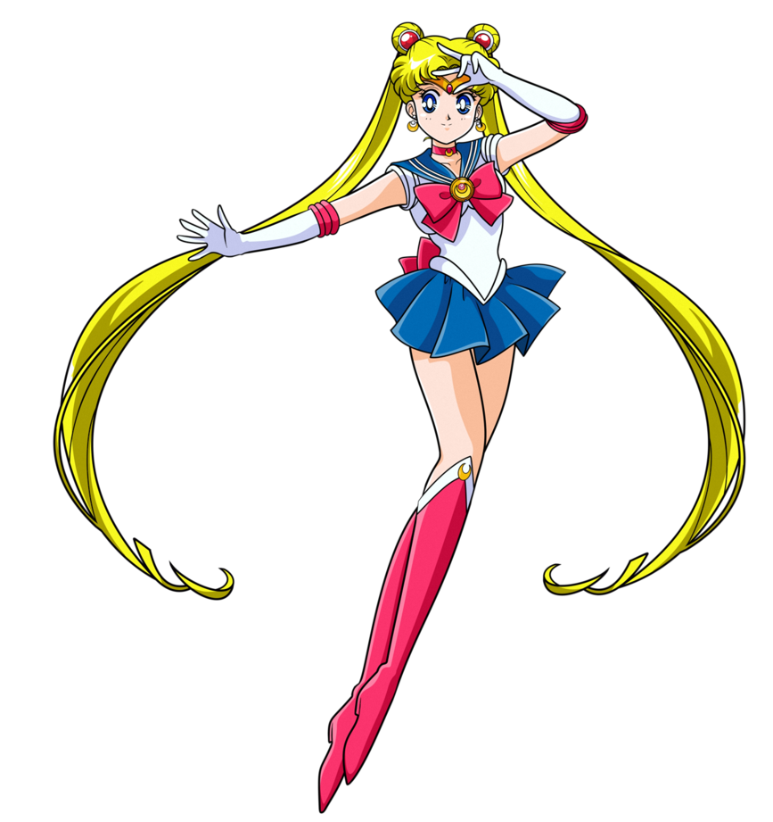

O início de tudo!!
No Japão, o anime teve suas raízes no período pós-Segunda Guerra Mundial, quando a indústria cinematográfica estava em reconstrução.
Inspirados pelas técnicas de animação ocidentais, como as da Disney, os artistas japoneses começaram a criar seus próprios desenhos animados com elementos distintamente japoneses.
Um dos primeiros marcos foi a série "Astro Boy" (conhecida como "Tetsuwan Atomu" no Japão), criada por Osamu Tezuka em 1963. Astro Boy se tornou um ícone da animação japonesa e abriu caminho para o surgimento de muitos outros animes populares nas décadas seguintes.
Qual foi o impacto no Japão?
Ao longo dos anos, o anime conquistou uma base de fãs cada vez maior no Japão, e o sucesso de produções como "Dragon Ball", "Sailor Moon" e "Pokémon" ajudou a popularizá-lo ainda mais.
Com o advento da internet, os animes japoneses passaram a alcançar uma audiência internacional cada vez maior, com fãs de todo o mundo consumindo e compartilhando seu amor por essas animações.
Além disso, o anime japonês começou a alcançar uma audiência internacional cada vez maior com o advento da internet e a disseminação de serviços de streaming.
Fãs de anime em todo o mundo passaram a consumir e compartilhar seu amor por essas animações, o que contribuiu para a expansão global da popularidade do anime japonês.
E no Brasil?
No Brasil, a história do anime começou a se desenrolar a partir da década de 1970. Nessa época, séries como "Speed Racer" (conhecido como "Mach GoGoGo" no Japão) foram exibidas na televisão brasileira e ganharam popularidade entre o público infantil. No entanto, foi na década de 1990 que o anime realmente explodiu no Brasil.
Com a chegada do "Clube da Criança" na extinta Rede Manchete, o público brasileiro foi apresentado a uma série de animes famosos, incluindo "Cavaleiros do Zodíaco", "Yu Yu Hakusho" e "Sakura Card Captors". Essas séries cativaram os telespectadores brasileiros e se tornaram verdadeiros fenômenos culturais. A partir desse momento, a demanda por animes só aumentou, e outras emissoras começaram a exibir uma variedade de títulos japoneses.
Além da televisão, a popularidade dos animes no Brasil também se expandiu por meio de mídias como DVDs, mangás e, mais tarde, serviços de streaming. Eventos especializados em anime e cultura japonesa, como as convenções, também se tornaram comuns em várias partes do país, reunindo fãs para compartilhar sua paixão em um ambiente acolhedor.
Por fim...!
Hoje, tanto no Japão quanto no Brasil, o anime é uma forma de entretenimento amplamente apreciada e celebrada. O Japão continua sendo o epicentro da produção de animes, com uma indústria robusta e criativa que continua a encantar fãs de todas as idades.
No Brasil, os animes conquistaram um lugar especial no coração das pessoas e se tornaram uma parte importante da cultura pop.
Essa conexão entre os dois países através do amor pelos animes criou uma comunidade global apaixononada e colaborativa, com fãs de anime compartilhando seu entusiasmo, criando fanarts, discutindo teorias e até mesmo se reunindo em convenções e eventos.
No geral, o anime desempenhou um papel significativo na cultura brasileira, proporcionando entretenimento, inspiração artística e um senso de comunidade para os fãs. A história e a evolução do anime tanto no Japão quanto no Brasil refletem a paixão compartilhada por essa forma de animação e narrativa, criando uma conexão duradoura entre os dois países.